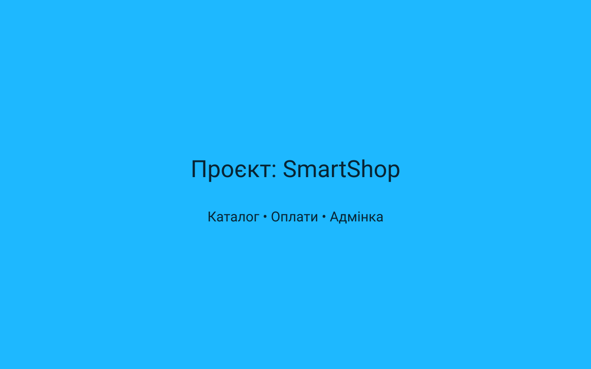
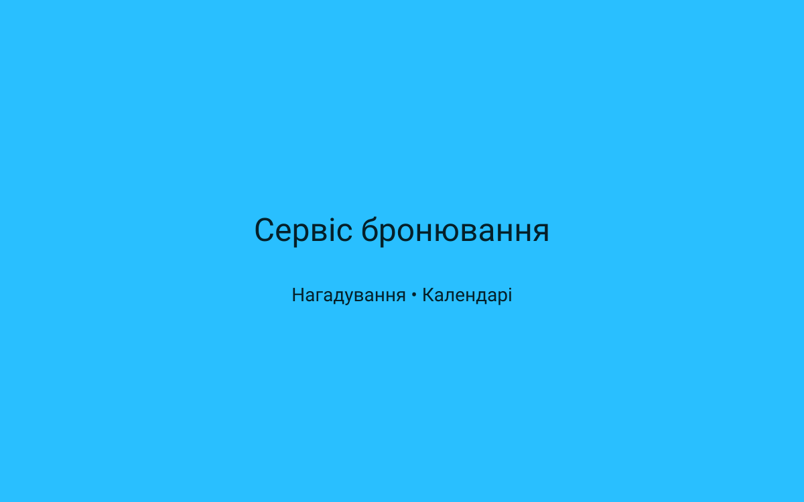
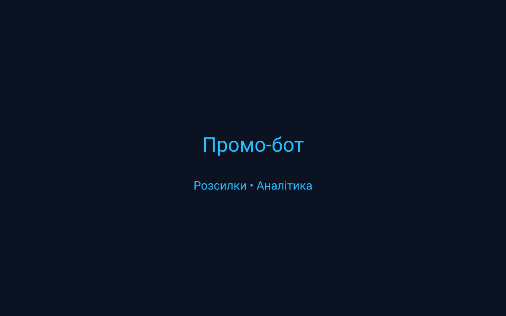
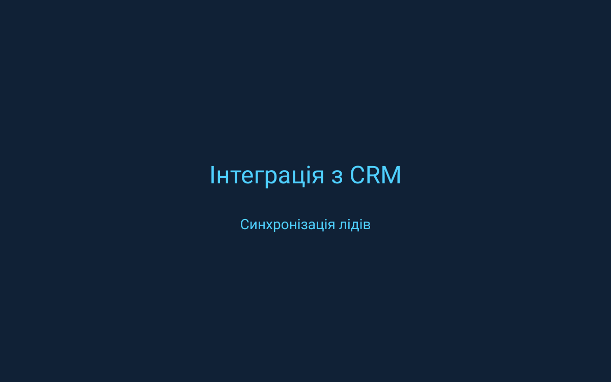

Створюю сучасних Telegram-ботів: автоматизація, заявки, магазини, меню, оплати та індивідуальні рішення.
Маю досвід інтеграції платежів, CRM, та Webhook-автоматизації. Працюю з Python, Node.js та популярними бібліотеками для Telegram API. Пропоную повний супровід: від технічного завдання до запуску й моніторингу в продакшні.
Працюю за прозорими етапами: аналіз вимог, дизайн чат-логіки, розробка, тестування та підтримка. Надаю оцінку термінів і вартості перед початком робіт.
Замовлення під ключ: опишіть задачу коротко, залиште контакти — я зв'яжусь для узгодження термінів і деталей.
Ми не передаємо ваші контакти третім особам. Підтримка після запуску доступна за домовленістю.
Перша відповідь протягом дня
Telegram-боти будь-якої складності*
Ваші дані залишаються конфіденційними
Автоматичний прийом заявок і обробка клієнтських звернень. Налаштовую швидкі відповіді, меню з кнопками, фільтри заявок і інтеграцію з CRM. Ідеально підходить для сервісів, салонів і локального бізнесу.
Каталог товарів з пошуком, корзина, оформлення замовлення і інтеграція з платіжними системами. Підключаю відправку повідомлень менеджерам і клієнтам з підтвердженням.
Система бронювань з календарем, підтвердженнями, нагадуваннями і можливістю відмінити або перенести запис. Підтримка синхронізації з Google Calendar або внутрішніми CRM.
Проєкти під ключ — складні сценарії, інтеграції з зовнішніми API, багатокористувацькі панелі управління та специфічні бізнес-логіки. Обговорюємо архітектуру, строки та етапи робіт перед стартом.
Налаштування збору даних про взаємодію користувачів, конверсій і типових сценаріїв. Генерую звіти, інтегрую з Google Sheets, Excel або BI-системами.
Супровід після запуску: моніторинг, виправлення помилок, оновлення функцій і безперервний хостинг на надійних платформах. Можлива SLA-підтримка.

Повний каталог, оплати та управління замовленнями через адмін-панель.

Бот для запису клієнтів з автоматичними нагадуваннями.

Кампанії, розсилки та аналітика взаємодії.

Налаштування потоку лідів і синхронізація даних.
Бот допоміг нам автоматизувати 80% заявок. Рекомендую!
⭐️⭐️⭐️⭐️⭐️Зручна адмінка та швидка інтеграція з платіжними системами.
⭐️⭐️⭐️⭐️⭐️Обговорюємо цілі, функціонал і бажані інтеграції. Оцінюємо термін і бюджет.
Готую технічне завдання, чат-флоу та простий дизайн інтерфейсу (за потреби).
Реалізація, підключення API, ретельне тестування сценаріїв та виправлення помилок.
Допомагаю з розгортанням, моніторингом і подальшим розвитком бота.
Залежить від складності: простий бот — від 3–7 днів, проміжний — 2–4 тижні, великий проєкт — індивідуально.
Підключаю популярні сервіси: LiqPay, Fondy, Stripe, PayPal — залежить від регіону і вимог замовника.
Зазвичай так — для вебхуків і бізнес-логіки. Допоможу з вибором хостингу та розгортанням.
Напишіть мені в Telegram, і ми обговоримо вашого майбутнього бота.
Написати в TelegramПеред контактом підготуйте короткий опис задачі, бажані функції та приклади — це допоможе швидше підготувати попередню оцінку.